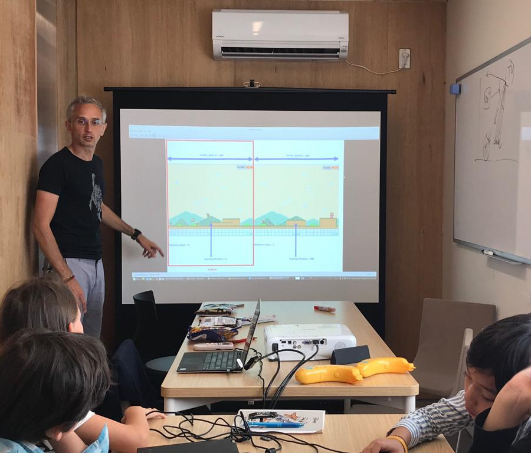

About Us
Build First, Theory Second
理論よりも実践
La Pratique Avant la Théorie
To be successful at something you need to be surrounded by experts that guide you along the way. That’s exactly what we did with the design of our immersive startup class. Instead of the traditional approach where students sit in a formal classroom, learn the theory first, and solve fictitious problems, our students are essentially software engineers that works for a startup and create actual products. They will need to solve real-world problems through decomposing, researching independently as well as managing their projects. The more academic part of the teaching will come only as and when needed to keep their projects moving forward. This environment, technologies, and processes are identical to successful startups and companies around the world. The only difference is they are being mentored by great software engineers along the way. Oh, and they can’t get fired!
日本語(準備中)
Pour réussir, il est toujours préférable d'être entouré d’experts afin d'être guidé tout au long d'un projet.
C’est exactement ce que nous avons fait avec nos classes immersives.
A l'inverse de l'approche traditionnelle où les élèves apprennent d'abord la théorie pour resoudre des problèmes fictifs,
nos élèves doivent directement se jeter à l'eau et prendre le rôle d'ingénieurs dans une startup pour créer des produits réels.
Ils devront résoudre des problèmes concrets en les décomposant, en effectuant des recherches de manière autonome et en gérant leurs projets.
Cet environnement, ces technologies et ces methodes de travail sont identiques à ceux des meilleures startups et entreprises au monde.
La seule différence est qu'ils seront encadrés dans cet aprentissage par des ingénieurs experimentés. Oh, et ils ne peuvent pas se faire virer!
Nurturing Leadership Skills
リーダーシップスキルの向上
Développer les Compétences Essentielles
This experience will not only prepare the students to become software engineers but also let them explore other roles in the industry.
The students will learn how to write production ready code and how to lead others. They will interact with different roles at the company
(engineers, designers, product managers, project managers) and will also have a chance to be one of them if they choose to.
At the end of the sprint, each team demo their progress in front of the product manager and the parents can join as well.
At the end of the class the teams will have the opportunity to present the final product in front of other students, their parents, teachers, mentors and "clients".
Beyond coding, our classes are thus designed to develop in our students these essential leadership qualities:
- Logical and Critical Thinking
- Problem-Solving
- Autonomous Learning Ability
- Diversity (Cross-Cultural) Understanding
- Creativity
- Teamwork
- Communication
日本語(準備中)
- 論理と批判的思考
- 問題解決力
- 自律的学習能力
- 多様性(異文化)理解
- 創造性
- チームワーク
- コミュニケーション
Cette expérience préparera non seulement les élèves à devenir des ingénieurs, mais leur permettra également d'explorer d'autres rôles dans l'industrie. Les élèves apprendront à coder de maniere professionnelle et à diriger les autres. Ils interagiront avec différents rôles au sein de l'entreprise (ingénieurs, designers, chefs de produit, chefs de projet) et auront également la possibilité de devenir l'un d'entre eux s'ils le souhaitent. À la fin du "sprint", chaque équipe présente ses progrès devant le chef de produit et les parents peuvent également participer. À la fin du projet, les équipes auront l’occasion de présenter le produit final devant d’autres élèves, leurs parents, leurs enseignants, leurs mentors et leurs "clients".
Au-delà de la programmation, nos cours sont donc conçus pour développer chez nos élèves ces competences essentielles:
- Logique et Esprit Critique
- Capacité à Aprehender des Problèmes Complexes
- Autonomie
- Respect de la Diversité
- Créativité
- Travail d’Équipe
- Communication
Staying Connected to the Tech Scene
テクノロジーの世界とつながる
Toujours Connecté au Monde de la Tech
Our founder has built over the years an large network within the Tech Industry.
Being permanently in contact with the brigthest individuals in this field allows Kyoto Lesson to provide cutting edge education to its students. All the tools and technics that we are using are always aligned with the indusctry best practices and always up-to-date.
Moreover, Kyoto Lesson provides a unique opportunity for its students to get directly in touch with Tech leaders: for more advanced classes, we'll be working on projects in collaboration with some of the largest tech companies (Google, Apple, Facebook, Amazon, Uber, Airbnb...), smaller startups (local and foreign) as well as with non-profit organizations.
Google Project >
日本語(準備中)
Google プロジェクト >
Notre fondateur a construit au fil des années un vaste réseau au sein du monde de la Tech.
En etant en contact permanent avec les leaders de ce domaine, Kyoto Lesson offre une éducation à la pointe à ses élèves.
Tous les outils et techniques que nous utilisons sont toujours en ligne avec les meilleures pratiques de l'industrie et sont constamment mis à jour.
De plus, Kyoto Lesson offre à ses élèves une opportunité unique d’entrer directement en contact avec les experts Tech de son réseau:
pour les niveaux avancés, nous travaillons sur des projets en collaboration avec certaines des plus grandes entreprises Tech
(Google, Apple, Facebook, Amazon, Uber, Airbnb ...), des startups (locales et étrangères) ainsi qu’avec des organisations à but non lucratif.
Projet Google >
Teaching First Principles of Coding
プログラミングの主要原理を教える
Enseigner les Bases de la Programmation
Students will start with Scratch, a visual programming language developed by one of the research laboratory at the Massachusetts Institute of Technology (MIT) and which allows users to create programs by using a simple block-like interface. They will use Scratch to modify existing games and create their first game. They will then build and deploy their own website (HTML / CSS / JavaScript) and their own mobile app. Finally, they'll deep-dive into JavaScript and Python, two programming languages extensively used by software developers.
- Level 0: My First Game Built with Scratch
- Level 1: Deep-dive into Scratch
- Level 2: Modify Minecraft
- Level 3: Build my Own Website
- Level 4: Build my Own App
- Level 5: Dynamic Website: JavaScript
- Level 6: Deep-dive into JavaScript
- Level 7: Making Game with PyGame
- Level 8: Deep-dive into Python
Our initial focus is on programming but we aim to quickly expand our classes to hardware (littleBits, Makey Makey, Micro:Bit Block Editor, Arduino, Raspberry Pi...) and robotics (Kamibot, Lego Mindstorms, Drones...).
As our students develop their coding skills, we'll further expand our curriculum to cover more advanced area of Computer Science such as: data structures, advanced algorithms, dynamic programming, database, computer architecture, concurrency, computer modeling, data science (big data, machine learning and the wider field of artificial intelligence), cybersecurity, cryptography, software development methodologies.
日本語(準備中)
Les élèves commenceront par Scratch un langage de programmation visuel développé par l’un des laboratoires de recherche du MIT (Massachusetts Institute of Technology)) et permettant aux utilisateurs de créer des programmes à l’aide d’une simple interface de type bloc. Ils utiliseront Scratch pour modifier les jeux existants et créer leur premier jeu. Ils créeront et déploieront ensuite leur propre site Web (HTML / CSS / JavaScript) et leur propre application mobile. Enfin, ils approfondiront les langages JavaScript et Python, deux langages de programmation largement utilisés par les développeurs.
- Niveau 0: Mon premier jeu construit avec Scratch
- Niveau 1: Approfondir Scratch
- Niveau 2: Modifier Minecraft
- Niveau 3: Construire mon propre site web
- Niveau 4: Construire ma propre application
- Niveau 5: Site Web dynamique: JavaScript
- Niveau 6: Approfondir JavaScript
- Niveau 7: Faire un jeu avec PyGame
- Niveau 8: Approfondir Python
Notre focus initial est la programmation, mais nous envisageons d'étendre rapidement nos classes au hardware
(littleBits, Makey Makey, Micro: Bit Block Editor, Arduino, Raspberry Pi ...) et à la robotique (Kamibot, Lego Mindstorms, Drones ...).
Au fur et à mesure que nos élèves développeront leurs compétences en matière de programmation, nous élargirons encore notre curriculum pour couvrir
des domaines plus avancés de l’informatique, tels que: les structures de données, les algorithmes avancés, la programmation dynamique, les base de données,
l'architecture informatique, le multi-thread, la modelisation informatique, l'analyse des données (les big data, le machine learning et le domaine plus
large de l'intelligence artificielle), la cybersécurité, la cryptographie, les méthodes de gestion de projet.
Two Programs: Depth and Breadth
二つ学習プログラム：より深くより広く
Deux Programmes: Ampleur et Profondeur
We've designed two complementary programs in order to bring both breadth and depth to the learning experience. We are also emphasising presentations and for both programs, our students will regularly present their projects to their parents, peers and "clients". While both programs cover the same topics they do so with their own twist. This insures that there are actually very little to no material overlap as the nature of the projects are quite different:
- After School Program [Breadth] (during school terms): 7 weekly classes per Level, each class is 90min long. With a maximum of 8 students per class, this program provides a personalized learning experience as each student benefits from additional attention from the instructor, and at the same time, learns from peers. Students learn the foundation of a wide range of key programming concepts through several real-life mini-projects and share their results and key take-away in a mid-term and in a final presentation to other students and parents.
- Coding Camp Program [Depth] (during school breaks): 5-day / 15-hour immersive coding holiday camps. It provides a hands-on learning experience during which the students work as a team on a single / longer term project for the entire duration of the camp. They successively take different roles in the project that they entirely manage on their own, under the guidance of their teacher. Students learn by experiment: trying, failing and trying again, while having fun in the process. The camp ends with a final presentation of the project by the team to other students and parents.
While we strongly recommand students to take the After School Program prior to taking the Coding Camp Program, in order to maximize the benefits from the camp immersion, we've designed the camp such that the After School Program is not a pre-requisite to the Coding Camp Program.
日本語(準備中)
Nous avons conçu deux programmes complémentaires afin de couvrir a la fois l'amplitude et la profondeur dans l'apprentissage de la programmation.
Nous mettons également l'accent sur les présentations et pour les deux programmes, nos élèves présenteront régulièrement leurs projets à leurs parents,
camarades de classe et "clients". Bien que les deux programmes couvrent les mêmes sujets, ils le font de maniere differente.
Cela garantit qu’il y'a en réalité très peu ou pas de chevauchement concernant le contenu des cours, car la nature des projets est très différente:
- "Après l'École" [Amplitude] (pendant les périodes scolaires): 7 cours hebdomadaires par niveau, chaque cours dure 60 à 120 minutes (selon le niveau). Avec un maximum de 8 élèves par classe, ce programme offre une expérience d’apprentissage personnalisée, chaque étudiant bénéficiant d’une attention supplémentaire de la part de l’instructeur et apprend simultanément de ses camarades de class. Les élèves apprennent les bases d'un large éventail de concepts de programmation clés à travers plusieurs mini-projets réels et partagent leurs résultats et leurs conclusions à mi-parcours et lors d'une présentation finale à d'autres élèves et parents.
- "Stage de Programmation" [Profondeur] (pendant les vacances scolaires): stage immersif de 5 jours / 15 heures. Il fournit une expérience pratique au cours de laquelle les élèves travaillent en équipe sur un projet unique / à long terme pour toute la durée du stage. Ils assument successivement différents rôles dans le projet qu’ils gèrent par eux-mêmes, sous la direction de leur enseignant. Les élèves apprennent par en faisant: essayer, échouer et essayer encore, tout en s'amusant. Le camp se termine par une présentation finale du projet par l'équipe aux autres élèves et aux parents.
Bien que nous recommandions fortement aux élèves de suivre le programme "Après l’École" avant de faire le "Stage de Programmation"
afin de maximiser l'experience d’immersion du stage, nous avons cependant conçu le stage de sorte que le programme "Après l’École"
ne soit pas un passage obligé avant le stage.
About the Team
チームについて
À Propos de notre équipe

Alan is a French national who studied at a prestigious US University.
He holds three master's degree in Engineering, Statistics and Business Administration as well as an All but dissertation PhD degree (ABD) in Probability and Finance.
Alan has been working as an option trader for several top-tiers investment banks for 15 years in Japan, Hong Kong and Singapore.
Being an enthusiast python coder, Alan was also during that time in charge of automating all the front office activities.
He is also the co-founder of HealthCo, a MedTech which mission is to make patient’s medical data portability a reality.
Alan also recently co-founded a FinTech, taking advantage of arbitrage opportunities seen on crypto-currency markets (bitcoin...).
Alan is the proud father of four children and together with his wife, they have decided to relocate to Japan towards the end of 2018
as they wanted their children to be more exposed to the Japanese culture, one of their heritage. And they thought there was no better place to do that than Kyoto.
Alan and his wife share the belief that coding is a vital skill that all children should pick up, as early as possible.
Seeing the lack of quality coding schools in Kyoto for his children, Alan decided to take the matter into his own hands and to open a small coding school.
And that's how Kyoto Lesson was born.
名前はアラン、国籍はフランス、アメリカの一流大学で学び、外資系有名銀行の株式トレーダーとして東京、香港、シンガポールにて15年の実績を持っています。
また、2016年に医療関連のテクノロジー会社を共同設立し、2018年に仮想通貨取引に関連するテクノロジー会社を共同設立しました。
アランは日本人の妻との間に4人の子供がおり、海外の生活しか知らない子供達に日本文化に触れる機会をもっと与えたいと考えるようになり、2018年末に日本に移住することを決めました。濃い日本文化に触れるのに京都が最適だと考えました。
アラン夫妻は、プログラミングはできるだけ早い段階で身につけるべき不可欠なスキルであると考えています。子供達にプログラミング教室を探す中で京都に質の高い学校がないことに気づき、アランは自ら小さなプログラミング教室を開くことにしました。こうして京都レッスンは始まりました。
Alan a grandi en France et a poursuivie ses études superieures dans une prestigieuse université américaine.
Il est titulaire de trois maîtrises en ingénierie, statistiques et administration des affaires (MBA), ainsi que d'un diplôme d'études supérieure en probabilités et finance.
Alan a travaille pendant 15 ans au Japon, à Hong Kong et à Singapour en tant que trader d'options pour plusieurs prestigieuses banques d'investissement. En tant qu'avide codeur en python, Alan était également responsable de l’automatisation de toutes les activités front office.
Il est également le cofondateur de HealthCo, une startup spécialisée dans les technologies médicales, dont la mission est de permettre aux patients de detenir toutes leurs données médicales de maniere electronique.
Alan a également récemment co-fondé une startup spécialisée dans les technologies liees a la finance, et tirant parti des opportunités d'arbitrage rencontrées sur les marchés de crypto-monnaie (bitcoin...).
Alan, heureux père de quatre enfants, a décidé, avec son épouse, de s'installer au Japon vers la fin de 2018. Ils souhaitaient tous les deux que leurs enfants soient davantage exposés à la culture japonaise, l'un de leurs patrimoines. Et ils pensaient qu'il n'y avait pas de meilleur endroit pour cela que Kyoto.
Alan et son épouse ont la conviction que savoir programmer est une compétence essentielle que tous les enfants devraient acquérir, le plus tôt possible. Constatant le manque d’écoles de programmation de qualité à Kyoto pour ses enfants, Alan a décidé de prendre les choses en main et d’ouvrir lui-meme une petite école de programmation. Et c'est ainsi ça que Kyoto Lesson est né.
|
I've always had a PC in my hands, being a fan of "MacGyver" and video games, I started to tinker at a very early age.
Study wise, I wanted well-rounded skills and I've thus studied IT hardware, System administrator, Network and Telecom.
I've finally specialized in web development.
Early on, I've discovered that I had a passion for teaching and I thus started to teach English to young children.
After a while, I've realized that rather than just teaching English, I should also teach in English a content which
could be useful for my students and naturally I've decided to teach coding and in particular web applications
- Farid
名前はファリツド、。
J’ai toujours eu un PC entre les mains, étant fan de Mc Gyver et de jeux vidéo, j’ai commencé à
bricoler très jeûne. Niveau étude, je voulais des compétences “multidirectionnelles” et me suis
dirigé vers IT spécialisation hardware, IT Administrateur system, IT Network et Télécom et IT
spécialisation web développement.
Très tôt, j'ai découvert que j'avais une passion pour l'enseignement et j'ai donc commencé à enseigner
l'anglais aux jeunes enfants. Après un certain temps, j'ai réalisé que plutôt que d'enseigner l'anglais,
je devrais également enseigner en anglais un contenu qui pourrait être utile pour mes étudiants et j'ai
naturellement décidé d'enseigner la programmation et en particulier les applications Web.
- Farid
|
|

Hello. I am glad to be starting up new classes here at Kyoto Lesson.
My background is a diverse mix of working with school-age children as well as in
computers and science-related fields.
I love and have been fortunate to work with children for over 30 years.
My experience with preschool and school-age children in the U.S., prior to coming to
japan in 2006, includes several years as the head teacher for an afterschool, as a
camp counselor and leader, and as a kindergarten teacher. I love fostering children's
creativity and sense of play, and love using games and art in my work. In Japan, in
addition to currently teaching English to children, adults of all ages at several
eikawa, and hosting an ongoing set of workshops focused on play and art for young
children, I have also been an afterschool program coordinator with children from grade K-6.
Interacting with kids in a variety of capacities is always a joy to me,
so I am very excited about this new program.
As the children in this program will be, I started learning about computers as young boy around
the age of 10, part of the first generation of "computer whiz kids". I started with fortran and
basic over a tty terminal, and over time I have had some contact with most of the major computer
developments over the last 40 years, either professionally or personally. This includes high end
applications such as cobol programming for mainframe computers as well as more "modern" small-scale
applications such as designing websites with html, javascript, php, or other languages. I have
been an editor and consultant on Physics and medical textbooks, including work with latex,
wordpress, and other publishing platforms. I am active currently as secretary and IT coordinator
for a scientific society in Japan, which includes a host of coordination, editorial, and
proofreading responsibilities.
I was born and grew up in Europe, but moved to the U.S. when I was 7.
As a result, I am a lifelong speaker of both French and Portuguese. I learned American Sign Language
through a connection with the deaf community in the U.S., and my Japanese is improving, especially
since my wife and I had our daughter in 2014. In my spare time I watch movies, read books, and
seek to learn new things.
- David
名前はデビッド、。
Bio David (Francais)
- David
See you soon !
Team Kyoto Lesson
|
|
|
|
| |
|
|